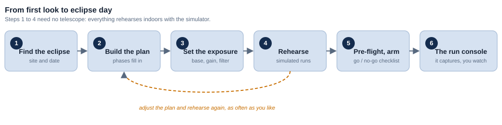
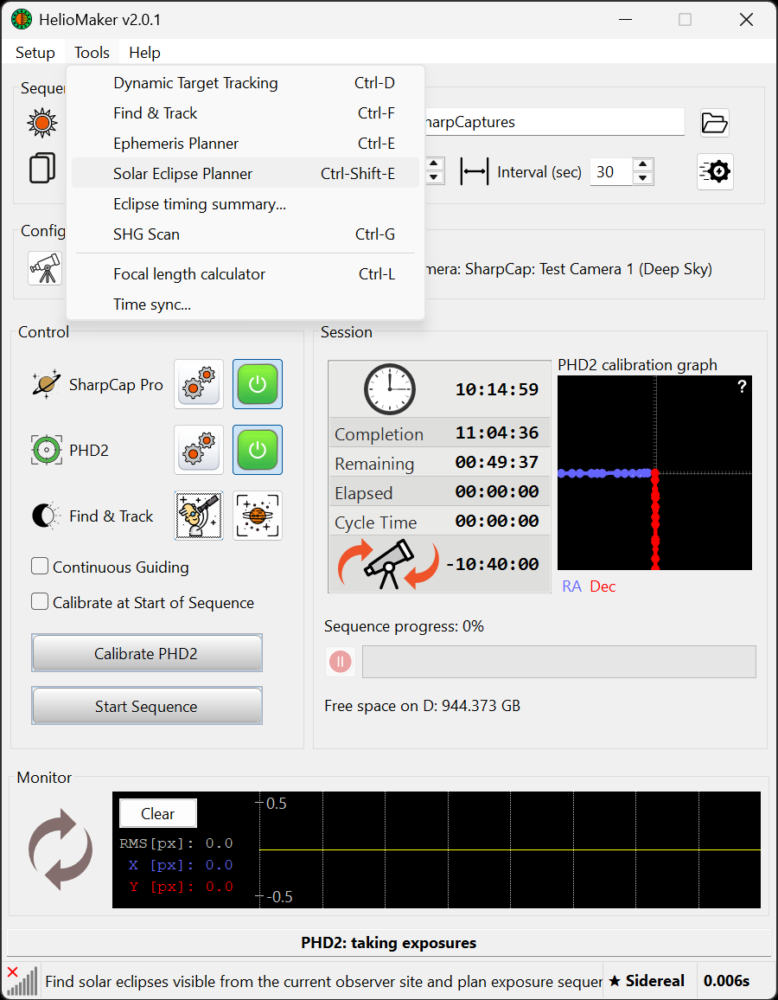

The whole flow on one page, for the impatient. Each step links to more detail if you want it,
but do read the safety rule, and please rehearse before eclipse day.

The whole path, start to finish. You can rehearse steps 1 through 4 indoors with the simulator; no telescope is needed.

Open
Tools ▸ Solar Eclipse Planner. Before the run, also set
Capture Folder: in the main screen's Sequence area; this is the base root beneath which
HelioMaker creates the eclipse run folder.
⚠ The one rule you cannot skipFor your eyes: never look at the Sun with the naked eye or through any optic without certified eye
protection, except during totality itself (disc fully covered). For your gear:
keep a certified solar filter on every scope through the partial phases. When the scope filter comes off
depends on the mode (Safe versus Diamond ring), but your eye protection only ever comes off during
totality. Full detail: Safety & eclipse modes.
Simple full solar disk example
The default Safe mode with Shared camera uses one camera and one solar filter.
Guiding pauses briefly through totality and recenters itself afterwards. Choose the eclipse mode yourself after
reviewing and rehearsing its filter procedure. Shared camera also requires the full solar disk to fit comfortably
inside the main frame; use a separate guide scope for high magnification, partial disk imaging.
Set the imaging foundation before you start
With the physical eclipse camera, scope and solar filter assembled, expose the filtered full solar
disk so it is bright and detailed without clipping. Record that exposure and camera gain. In
Plan preferences..., enter them as Full solar disk exposure
(ms): and Full solar disk camera gain:, then select the matching
effective Solar filter density: of the complete attenuation stack. If additional
photographic ND is used behind a certified front-mounted solar filter, the optical densities add; photographic
ND is never safe as the solar filter on its own. These three values are the most important inputs to the
automatic exposure plan. HelioMaker combines them with
Fred Espenak's eclipse exposure
recommendations to derive the recipes for all phases. Keeping the same gain across all phases is
recommended; use the
Phase editor afterwards for deliberate tuning.
Once automated imaging starts, exposure and gain cannot be changed for that run.
Weeks ahead do not skip
Set your observing site first. Before opening the planner, open the Dynamic Target Tracking
tool (the astronomer button) and select the location where you'll observe the eclipse. Its exact
coordinates and time zone drive the timing of every phase. → Planner ▸ Set your site
Find your eclipse & build a starting plan. Open
Tools ▸ Solar Eclipse Planner and find the event for your site. Do not approve the plan
yet; its main imaging inputs still need to be measured and applied.
→ Planner
Make the plan's major choices in Plan preferences.... Choose
Safe or Diamond ring (Classical), choose
Still mode (exact exposures) or Live view, select the guiding
camera, and enter the measured full solar disk exposure, gain and filter ND rating. The eclipse mode changes
filter timing and the derived imaging plan; Still versus Live changes how the plan is captured.
→ Preferences
Set the capture root on HelioMaker's main screen. In the
Sequence area, choose the Capture Folder: with enough free
space for the run. The Files group in Plan preferences controls the base filename and
timestamp format, not this folder.
Run the System benchmark test on your actual camera. It makes the plan's cycle counts realistic
(and qualifies Still mode if you use it). → Capture mode
Review and tune the derived phases in the Phase editor. Keep the
reference gain across all phases unless physical testing supports a deliberate exception.
Approve the completed plan with Save as final. If testing later causes a
change, approve the revised plan and rehearse it again.
Practise daytime polar alignment and solar guiding on ordinary sunny days. Never debug guiding on
eclipse day. → Prepare in advance
If you will use automatic refocus, prepare SharpCap Focus Assistant. With the physical eclipse rig,
complete a successful solar focus scan, manually request SharpCap Refocus, and confirm that it returns to
sharp focus. Only then enable Automatically refocus before totality.
→ Focusing
Rehearse the run: a Dry run (timing only), then a Wet run against the eclipse
simulator, until the cues feel automatic. → Simulation
Logistics: sync the PC clock, charge batteries, free up disk.
Eclipse day
No last minute SharpCap tuning after preflight opens
HelioMaker applies and verifies the saved plan's sequence settings and applies them again when the run is
armed. If a value is wrong, cancel preflight, correct and save the plan, repeat any affected camera test, and
rehearse the revision. A manual SharpCap adjustment is not a plan edit and will be replaced when HelioMaker
reapplies the plan.
Set up and polar align the mount using your daytime routine, secure the filter on the scope, and focus the Sun.
Confirm the planned exposure and gain on the filtered Sun before starting imaging. If necessary,
use the initial partial phase, but do this before selecting Start. Update
Plan preferences..., derive and review the phases again, and save the revised plan as
final if either value changes.
Start tracking and guiding, and frame the Sun. The preflight checklist has buttons for this.
Open the preflight checklist, clear the gates, then select Start to arm. → Preflight
Leave the planned camera selected in SharpCap. A different active camera blocks preflight and
arming. If a disconnect or camera change occurs during the run, follow the console recovery status while
HelioMaker waits for and restores the planned camera.
Watch the console. When it cues you and you actually see totality begin (the disc fully
covered, in Safe mode), remove the scope filter; replace it early on the cue, while the disc is
still dark. Your own eye protection stays until totality either way. → Run console
That's it. The sequence captures automatically; with shared camera, guiding resumes and recenters
the Sun after C3. You just manage the filter at the cued moments and enjoy totality.